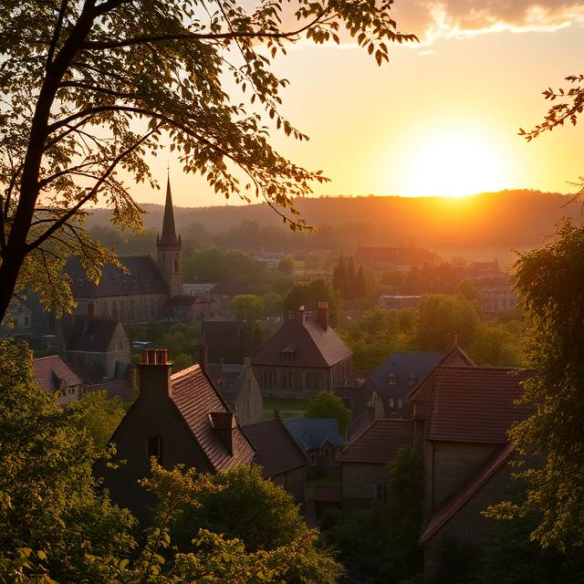

В последния ден на търсенето, когато слънцето вече беше залязло, а мракът отново започваше да поглъща Рейвънфорд, съветът се събра за последна среща в библиотеката. Всички знаеха, че битката им не беше просто за физическо оцеляване. Това беше за оцеляване на душата на града. Всеки поглед бе пълен с решимост, но и с напрежение. Те разбраха, че Леон нямаше да се предаде лесно. „Можем да спрем това. Можем да го спрем, ако разберем всичко, което е направил“, — каза Джо, като държеше дневника на Леон в ръце. „Всеки символ, всяко заклинание е част от неговия план. Трябва да го разкрием изцяло.“ „Ако успеем да го направим, може би ще имаме шанс“, — добави Зак, който беше готов да поеме каквато и да е цена, за да предотврати още една катастрофа. Мира, която беше събрала всичките записи от библиотеката и руините, се обърна към всички. „Тези сили не са само тъмни. Те са част от нашето наследство, но те трябва да бъдат контролирани. Леон е сбъркал, че е избрал да ги освободи. Ако можем да използваме магията, за да ги заключим отново, може би ще възстановим баланс в Рейвънфорд.“ В този момент разбраха, че това, което търсят, не е само начин да победят Леон. Те трябваше да затворят вратата, през която бяха преминали тъмните сили. Трябваше да възстановят мира и равновесието, но на висока цена. „Готови ли сте да го направим?“, — попита Джо, поглеждайки всички присъстващи. Всяко от тях кимна решително. Събрани в ритуалното място на руините, те започнаха да произнасят заклинания, като всяка дума звучеше като удар на чук, затварящ тъмнината отново. Леон бе там, в сянката на обедняващия ден, готов да се бори. „Няма да успеете!“, — изсъска той, изправяйки се пред тях в цялата си ужасна сила. Но вместо да се сражават с него физически, те се съсредоточиха върху заклинанията и събираха силата на всички, които стояха зад тях, включително народът на Рейвънфорд. Тяхната колективна вяра и решителност станаха мощна защита. Леон, неспособен да преодолее магията, която се беше вдигнала, започна да се отдръпва, погълнат от собствената си тъмна енергия. Той изкрещя в безсилна ярост, докато постепенно изчезваше, вятърът погълна последната му следа. „Сега е свършено“, — каза Зак, като се наведе към руините и гледаше как обредът приключва. „Ние го победихме, но това не е краят. Трябва да възстановим всичко, което той е унищожил.“ Но Джо се усмихна, поглеждайки към новото утро, което започваше да се ражда в хоризонта. „Това е само началото на новата история за Рейвънфорд“, — каза той. „Сега ние пишем бъдещето си.“ Градът беше спасен, но душата на Рейвънфорд нямаше да бъде окончателно свободна, докато всички не разкрият напълно миналото си и не намерят начин да излекуват ранени корени. Те бяха се борили за светлината и я бяха намерили. Загърбвайки мрака, Рейвънфорд започваше да се възражда. Но пътят напред не беше лесен. Дори с победата над Леон, тъмните сили все още бяха нещо, което не можеха просто да забравят. Възстановяването на града беше само първата стъпка към дългото и трудно пътуване за изцеление на хората и на самата земя, която беше била под влиянието на тъмнината толкова дълго. Джо се завърна към своята работа като журналист, но не можеше да излезе от мислите си за миналото на Рейвънфорд. Той знаеше, че докато не се разбере напълно какво е довело до катастрофата, ще бъде трудно да се предотврати подобно нещо отново. Прекара часове в разговори с местните жители, слушайки техните разкази, търсейки всяка частица информация, която би могла да хвърли светлина върху случилото се. Захванали се с тази задача, Зак и останалите членове на съвета започнаха да изучават все по-задълбочено останките от руините и да се свързват с далечни учени, които биха могли да им помогнат в разкритията си. Те откриха, че мракът, в който беше изпаднал Леон, не беше просто негово дело. Това беше резултат от хиляди години забравени магии и древни уговорки, които все още тегнеха над земята. Всеки ден беше малка победа. Прогресът беше бавен, но не и невъзможен. И въпреки че Леон беше мъртъв, неговото наследство, не само в тъмните ритуали, но и в надеждата за възраждане на Рейвънфорд, щеше да остане живо. Те знаеха, че трябва да изправят миналото, ако искаха да създадат бъдеще. Въпреки всички опасности, които можеха да възникнат, хората в Рейвънфорд започнаха да се събират и да започват отново. Възвръщането на светлината в града беше не само физическа промяна, но и вътрешна трансформация за всички – и за жителите, и за самия град. Рейвънфорд вече не беше място на страха. Беше започнало да расте, да диша и да се възстановява, и в това имаше огромна сила. Въпреки че съветът не беше приключил с работата си, в очите на всички беше ясна решителност. Градът им беше жив. И докато те стояха там, единни, на прага на новия ден, знаеха, че пътят, по който ще поемат, може да бъде дълъг, но не беше самотен. Рейвънфорд можеше да бъде спасен.
